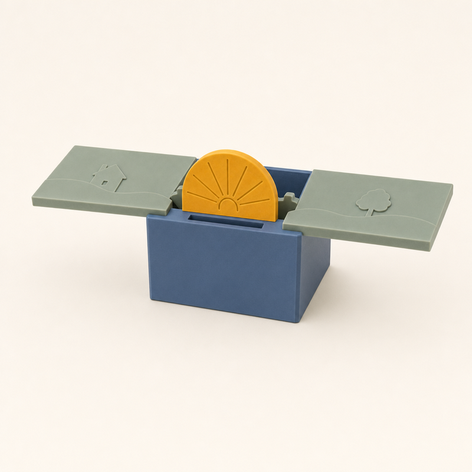
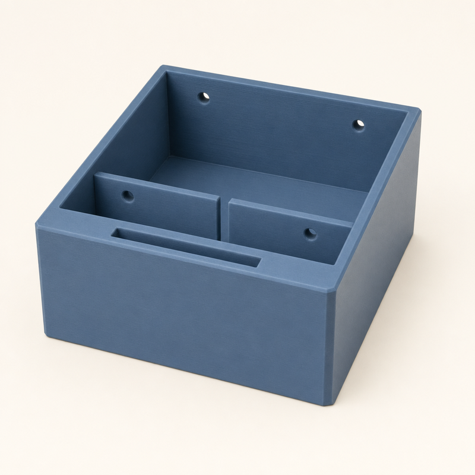
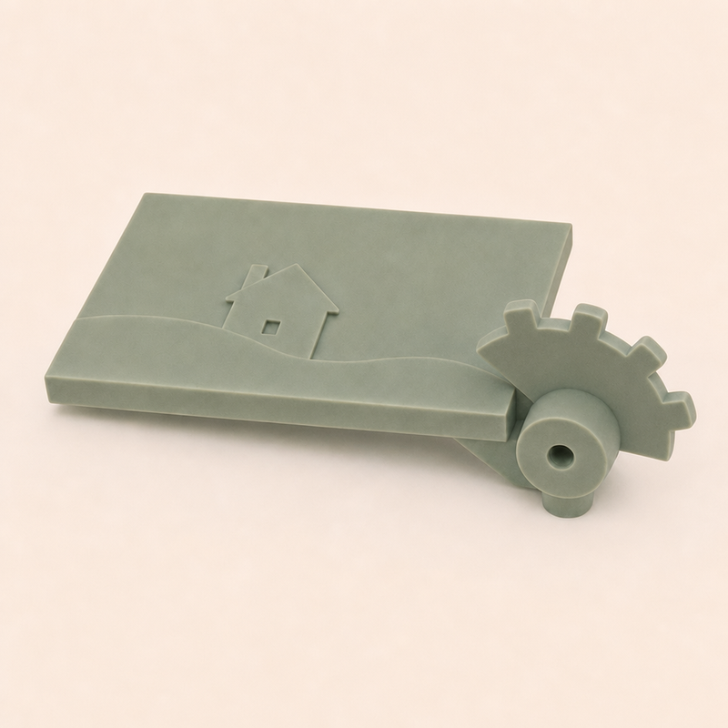
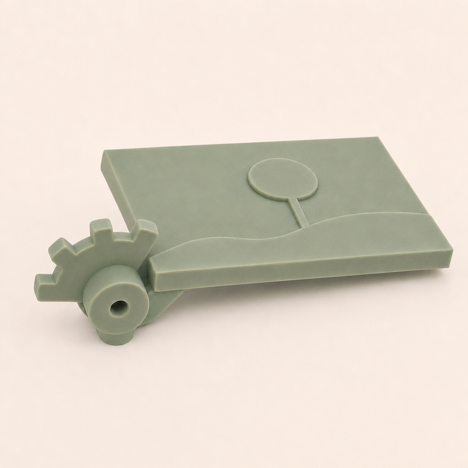
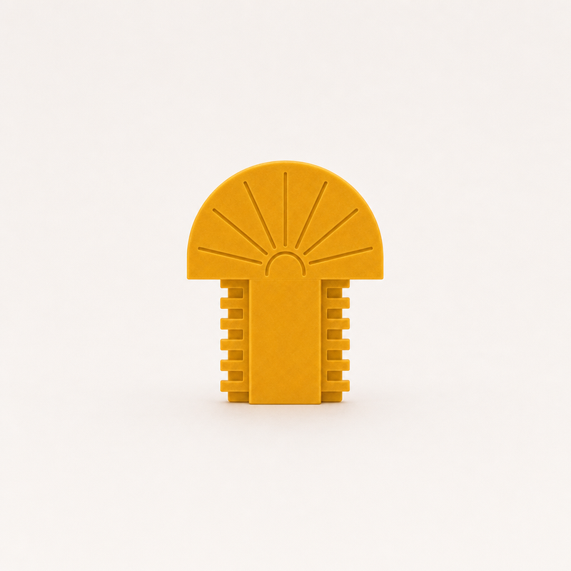
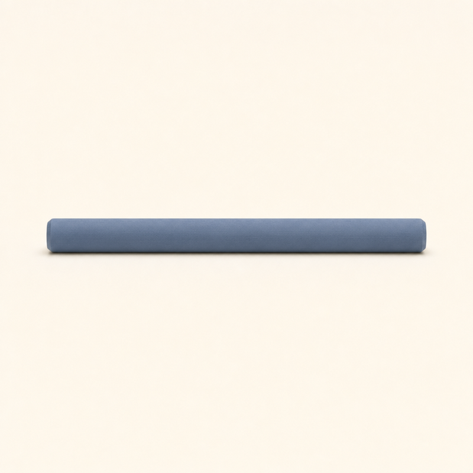

ref-01 · Cả món đồ chơi (mở)nhìn từ trước-phải, hơi từ trên (-75, 30)
Bản build sẽ khác ảnh ở đâu
- Mặt trời trong ảnh hơi to và hơi thấp. Bản build: mặt trời rộng 36 mm, mép dưới cao hơn mặt hộp 3 mm.
- Nhìn từ góc này, bản build lộ vài răng của thanh răng ngay sau đỉnh mặt trời (khoảng 6 mm). Ảnh không vẽ phần này.
- Hai lá trong ảnh hơi nghiêng. Bản build: hai lá nằm phẳng, tựa lên mặt hộp.
- Bánh răng trên hai lá được vẽ răng vuông và nhỏ. Bản build: 6 răng bánh răng thật, to hơn, chìa xa hơn.
- Ảnh mặt trời vẽ hình hơi cao hơn nửa hình tròn, chân hơi ngắn. Bản build: đúng nửa hình tròn, chân dài 21,5 mm.
- Ảnh spine vẽ vách trong thấp hơn miệng hộp. Bản build: vách trong cao bằng miệng hộp.
Đổi so với bản dự thi
- Spine cao 44 mm thay vì 30 mm, để mặt trời giấu hẳn bên trong khi gập.
- Bánh răng to hơn (6 răng), đủ ngưỡng 3 mm của Taste; thanh răng nằm ngay sau mặt trời.
- Khi mở, hai lá tựa lên mặt hộp; đó cũng là điểm dừng.
- Ẩn bên trong, chỉ để in không cần support: phễu 45° sau bánh răng, vát đầu răng của thanh răng.

ref-02 · Spine — 1 chiếctrước-phải, từ trên (-75, 30)

ref-03 · Lá trái (căn nhà, trăng) — 1trước-phải, từ trên cao (-75, 45)

ref-04 · Lá phải (cái cây, sao) — 1trước-trái, từ trên cao (-105, 45)

ref-05 · Mặt trời + thanh răng — 1thẳng trước, ngang tầm (-90, 0)

ref-06 · Trục chốt — 2 chiếctừ bên phải, hơi từ trên (0, 15)